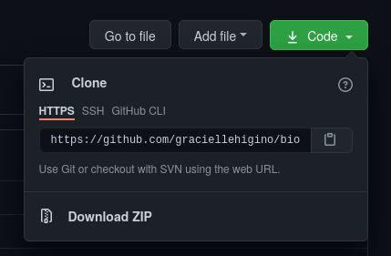

Have you ever felt lost in your own projects? Do you feel like your workflow is quite effective, but it’s not transparent enough? This detox routine can help you regain control over your (very messy - I know!) project structure and discover a marvelous world of collaboration and contribution in open science!
Reproducibility is a principle that resonates to the most used concept of science, assuring that a hypothesis is testable. It means that the process to test an idea - from data to results - can be repeated. It is different from replicability, which means the process can be repeated, but using different data.
In this detox week we will reflect and experiment with open science, using our skills for project design, version control, virtual environments and automation. We will reevaluate our current workflow and fine-tune where needed, to reach the most reproducible workflow possible for us.
Sunday - reflect about open science
Self-care task of the day
Go to a calm place. No need of silence, just a place where you can just be still. Set a timer for 5min. Take a deep breath in, and a deep breath out. Give your body a scan-through: concentrate in each centimeter of it and try to be aware of how does your body feel there. Everytime you find a contracted muscle, try to relax it. Pay attention to the sounds around you. When the timer is off, take another deep breath.
On the first day of this detox journey, let’s reflect on our way to work and how it could be better. Take a moment of your day and think about:
What is your current workflow when you develop a project? Take a pen and paper (physical or digital) and sketch your usual process, step-by-step. Add as much details as you can (and take this chance to get creative!). Make sure to save this sketch in a place that is easy to access, you’re gonna need it in the following days.
How do we build trust and facilitate collaboration in our projects?
How can be inclusive by design - what can we do in our projects to invite collaboration?
Is reproducibility openness? If a project is reproducible, does that mean it is accessible?
Suggested reading
Monday - design a project
Self-care task of the day
Go to somewhere where you feel in peace or happy. Take paper and something to write - even better if it’s colorful! Set a timer for 30 minutes and doodle something that reflects how you are feeling, something that represents a happy thought you had today, or something that represents the place you are right now.
In this step we will squeeze our creativity out of our brains to come up with a project that is reproducible by design. Is there a hierarchy between your folders? Which folders do you need? Should you mix raw and clean data? Did this last question offend you?
There are a couple of tools you can use to automatically create a project structure for you, such as RProject and its combination with the R package minimaltemplate, or the PkgTemplate.jl for development of packages in Julia.
The main things you need to reflect on when designing your open project are:
Will I use data? If yes, will I need to treat/clean/subset them?
Will I use code?
Will it be shared? If yes, how? Do I want people to cite me, for exemple?
Will I need to generate manuscripts/reports/figures?
Will it be useful for people to know how to navigate my project? Will I welcome collaborators and contributors?
What is the naming system I will use - for both folders and files?
See an example of a structured project below (adapted from here):
## /home/awesome-manuscript
## ├── .github
## ├── .gitignore
## ├── .travis.yml
## ├── DESCRIPTION
## ├── LICENSE.md
## ├── R
## │ ├── analysis.Rmd
## │ ├── local_functions.R
## │ └── package_list.R
## ├── README.md
## ├── awesome-manuscript.Rproj
## ├── data
## │ ├── clean
## │ ├── raw
## │ └── temp
## ├── main-script.Rmd
## ├── manuscript
## │ └── sources
## │ ├── ecology-letters.csl
## │ ├── library.bib
## │ ├── packages.bib
## │ └── template.docx
## ├── output
## │ ├── figures
## │ ├── results
## │ └── supp
## └── todo.txtVery nice, but the TL;DR version is:
Consider having a dedicated folder for your data and split them into clean and raw data (alternatively, you can store your cleaned data inside an “output” folder, where other sorts of outputs will also be). If needed, create another folder for “sandbox data” - we need to have room for creativity in science! Also make sure to store the metadata in these folders, alongside their respective data, where they belong.
If you will produce reports/manuscripts, maybe it’s a good idea to have a dedicated folder for them too. Store there everything you’ll need to render your files, such as bibliography and templates.
Figures should go in their own folder too.
Code usually go in their own folder too, but if the code is about making the project work and putting everything together, it should go in the root.
Give cool names
Your project is so awesome that it needs the coolest names in its folders and files! Good names are informative and consistent. It is a hard exercise, but we do get better with time. The main things to think about when naming your things are:
Does it describe what’s inside without being verbose?
Does it allow for correct ordering?
Is it easily searchable (a.k.a., machine readable)? Will my computer crash if I need to change to this directory?
Licenses
An important part of making your work reproducible by anyone is to share it, and to do that safely, it is important to connect your project to a license. This is a statement about what and how people can use any part of your project. Chosing a license can be a difficult task at first, but if your projects have a common structure, they should be ok with the same license. When chosing a license, it is important to ask yourself (and your collaborators) the following questions:
Do we want people to give us credit for our work when this projects is distributed, derived, performed or displayed?
Do we want the derivatives of this project be shared with the same license that we chose?
Are we ok with this project being used for commercial purposes?
A combination of your answers will guide you to find the best license for your project which is adequate for your community. There are a couple of online tools that can help you with that! For example, if you are sharing creative work, you can consult the Creative Commons - Choose a License tool. For other open source software licenses, you can take a look at the Choose A License website. The cool thing is: you can also create your own license! In any case, once you chose the appropriate license for your project, save it in your project root folder with the name “LICENSE” (as a text file). This way, your version control host system will automatically recognize it and display something like “hey, this project has a license!” when someone finds your project.
Suggested readings
Tuesday - control your versions
Self-care task of the day
What is version control? Why is it cool to use?

A version control system allows changes made to a file to be recorded in a timeline, and it is possible to retrieve previous versions at any time.
This is possible because with version control you don’t save copies of your work, but its history, avoiding things like this in your working directory:
- project/
|- scripts/
|- script-v0.1.R
|- script-after-review-from-Princess-Lea.R
|- script-merged.R
|- script-not-working-anymore.R
|- script-wtf.R Git is a distributed version control system, which means the snapshots of your work are stored in your local drive, but also can be distributed from the cloud to other developers.
A little bit of Git vocabulary and architecture
The basic architecture we have to deal with is composed of a branches (including one we’ll call “main”, but is sometimes called “master”), clones and forks.

The repository main timeline
The main is the primary timeline of your repository (a project with the files required to develop it). There the files will ideally only be changed when strictly necessary, i.e. when a change is critical to the progress of the project.
Branches from the master: branch
A branch  is a ramification from any other timeline. It is like a copy repository within the main repository, which is created to test changes that may or may not be implemented in the
is a ramification from any other timeline. It is like a copy repository within the main repository, which is created to test changes that may or may not be implemented in the main timeline. Ideally, each developer creates a branch to test the changes they deem necessary and submit these changes to their colleagues’ judgment before implementing them in the main.
Copying repositories from the ‘cloud’ to the computer (or, working offline):
Repositories can be created online and many things can be done there. However, in order to work locally on a repository, i.e. to work offline, we need to create a clone of the repository we have online. A clone is a synchronised copy of your online repository. Everything you do in your local working directory (corresponding to the clone) will be synchronized with the online repository.
Copying online repositories
In turn, forks  are complete, independent copies of a repository. We use a fork (not a clone) when we want to change the direction of the project, or when we want to contribute to someone else’s project independently and only then suggest changes to the original project. If you need to update your fork with the newest version of the project, you can do that by requesting a fetch to Git.
are complete, independent copies of a repository. We use a fork (not a clone) when we want to change the direction of the project, or when we want to contribute to someone else’s project independently and only then suggest changes to the original project. If you need to update your fork with the newest version of the project, you can do that by requesting a fetch to Git.
General workflow vocabulary
When we change some file and save the new version, we do a commit  . Commits should be accompanied by short but sufficiently descriptive comments, so that you can understand what the difference in that version is and locate it more easily. With commits you can track what change was made, where, by whom and when.
. Commits should be accompanied by short but sufficiently descriptive comments, so that you can understand what the difference in that version is and locate it more easily. With commits you can track what change was made, where, by whom and when.

After changing a file and saving the new version, this version needs to be given a tag (an identification code), and then uploaded to the online repository. We call this a push. To update your local directory with the newest versions of files, you must tell Git to pull them.
When working on a branch, you can request that the changes you have made be implemented in the main branch of your workflow (or any other branch). To do this you request a merge via a pull request  . In a pull request, you ask a repository owner or contributor to accept the changes you made to a fork or branch into another branch. If they accept, you are listed as a contributor to the project.
. In a pull request, you ask a repository owner or contributor to accept the changes you made to a fork or branch into another branch. If they accept, you are listed as a contributor to the project.
Working remotely
The online portal of your Git server allows you to do most of the tasks described above in a very intuitive way. You can edit some files, upload others, request a merge, create and delete a branch, etc. Once you know the Git logic and architecture, it is easy to work online.
For a detailed walkthrough, take a look at this page.
Working locally
However, the changes we need to make cannot always be done directly in the portal, or would be done more efficiently if we worked on our computer, with our preferred software. To work on your repository from your computer, you only need to install Git itself (https://git-scm.com/downloads). Some softwares allow you to visualize the timeline and operations being made, such as GitKraken (https://www.gitkraken.com/) and some extentions for VSCode and RStudio.
Once you’ve installed Git, the there are two possible ways to start:
You can create your online repository directly on your Git host server (such as GitHub, GitLab or Bitbucket);
Or you can “transform” a local directory into a Git controlled project.
In the first case, to have a copy of your online repository on your computer, just clone your directory, either by downloading all the files in a .zip or by copying the ssh key or html address to use in a Git command.

You can also clone from GitKraken, by clicking on the little folder on the top left corner or on “File” on the menu.

In the second case, you must right-click on your workbook and open the Git Bash; alternatively, in GitKraken, you can click on “Init” in the same window shown above and indicate the directory of your workbook in “New repository path”.
Basic Commands
The following commands will give us an idea of a workflow in Git.
To use Git, you need to configure it so that your account on your Git server is recognised by it. In Git Bash:
git config --global user.name "username"
git config --global user.email "iamawesome@email.com"
git config --list #Confirm your settingsThere, now Git knows who you are.

To start a repository from your computer, you can tell Git to start or “watch” a folder.
First, check what the working directory is and change it if necessary.
pwd # prints the working directory
cd # takes you to the root
cd .. # takes you to one level up directory
cd "your/directory" # changes your working directoryTo clone your repository, copy the url as shown in the picture above and ask Git to clone the repository into the directory you indicated.
git clone https://github.com/graciellehigino/bios2.github.io.gitThe above command will create a folder with the same name as the repository in your working directory. If you want the folder created to have another name, include that after the repository address. This process works if you have an online repository and want it to exist on your computer. You can also do it the other way round. If you have not yet created a folder for your project, you can ask Git to create one for you:
mkdir "web-repo-github"But if you already have a folder and want Git to “watch over” it, start a local repository in the directory indicated:
git initYou can (maybe you need to) tell Git where your remote repository is:
git remote add origin https://github.com/graciellehigino/bios2.github.io.gitOk, now your repository is ready to use.
Check if there are new files in your folder or modified files that haven’t been pushed yet:
git statusHey, couldn’t you find an important file? Add it to the Git vision field now!
git add file # adds a file
git add -u # updates the file tracking
git add -A # all the aboveTo make additions interactively via the terminal, use:
git add -iFollow the instructions provided by the terminal and include as many files as you want before committing.
Now that Git is keeping an eye on all your files, any changes you make (and want them to be recorded in this file’s timeline) will be detected. To make sure your changes are recorded, “commit” the changed file with a comment so you can remember what the difference is in that version.
git commit -m "it's awesome now"A commit only updates the local repository if you are working locally, or the remote repository if you are working remotely. To synchronize the two repositories, you must either push updates to the remote repository or pull updates to the local repository.
git push origin master
#"Git, please take the updated files to the remote repository 'origin', on the 'main' branch."
git pull
#"Git, please bring the updated files from the remote repository to my local repository"How to track changes in my files?
Check the changes in the content of the files (e.g. new lines added):
git diffCheck the files and their changes that are in the stage area:
git diff --stagedIf you are lost between the different versions of your files, check the commit history! :)
git log # history of project commits since the beginning
git log -p # detailed historic of commits (i.e. git log + git diff)Depending on the size of the changes, the log may be very large and you will need to press “return” to each page to see all the changes. At the end you will see (END), then press the letter ‘q’ to finish reading.
If you only want to check the latest commits, limit the list with git log -p -1 (replace the 1 with the number of commits you wish to see). You can also check out the entire change history of the working directories with the Git viewer with gitk. Isn’t that cool!
Working with branches
Branches are ramifications of other timelines. They are very useful when you need to test or work on large changes without changing what is on the main branch. It is very important to maintain branches in your collaborative work, because it reduces the chance of the main branch suffering accidental major changes and simplifies the management of file versions.
git show-branch -a # lists all branches
git branch name_of_branch # creates a new branch
git checkout name_of_branch # transfers the workspace to the new branch
git checkout -b name_of_branch # creates a branch and transfers the workspaceWhen all the changes you have made to your branch are done and you think it is time to merge them into the main (or any other branch), move to the target branch and request a merge:
git merge new_branch # merges the changes from 'new_branch' to 'main'If you no longer need the branch and want to delete it, use the git branch -d new_branch command.
It can often happen that your working branch is not up to date with the main. This can be a problem if the main has important updates for the development of your project on the branch. To bring the main updates to your branch, follow these steps:
1. Check if your workspace is on the main branch. If not, transfer it:
git checkout master- On the
main, update your local directory:
git pull- After updating your local directory, move to your branch, merge the
mainupdates into your branch and upload to the remote repository:
git checkout your-branch
git merge main your-branch
git pushThat’s it! Now your branch contains everything that was new in the main. :)
Oh, my Git! D=
Did you mess up commits? Want to revert a change? Don’t despair!
If you made a commit and regret it, but don’t even remember which commit it was (“Find out commits associated for a specific file”):
git log -p filename`If you want to include new edits to the last commit, replacing it:
git commit --amend -m "message"If you want to remove any file from the stage area after a git add .:
git reset HEAD new_file.RBut if you want to remove it from your working tree and the set of added files:
git rm new_file.RIf all that goes wrong, try the following (tips taken from here):
git revert --no-commit <commit hash> # Revert, but don't commit yet
git reset # Take everything from the stage area
git add yourFilesToRevert # Add files to revert
git commit -m "commit message"
git reset --hard # Undo changes not commitedIf you want to remove all local changes and commits, retrieve the most recent history from the server and point to your local branch main like this:
git fetch origin
git reset --hard origin/masterThat’s it! There’s a lot more in the git world, but I hope this guide can help you on your version control journey.
Remember: keep the main as untouched as possible, work with branches to test your ideas, and always push your modifications before going to bed.
Suggested reading
- This lesson was transleted from a git guide in Portuguese I wrote with Karlo Guidoni in a study group we promoted at Universidade Federal de Goiás, back in 2017, and we used time and again in our reproducibility trainings. You can take a look in our repository here.